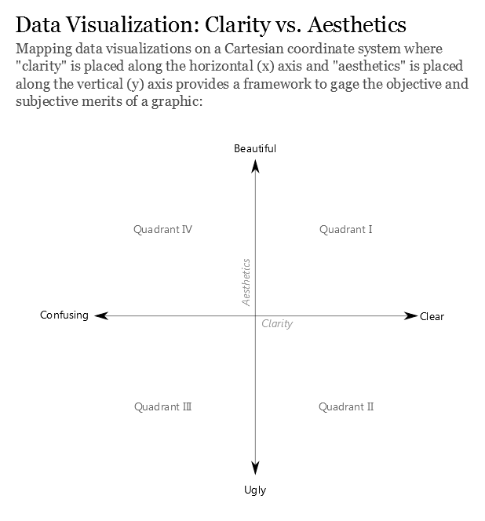
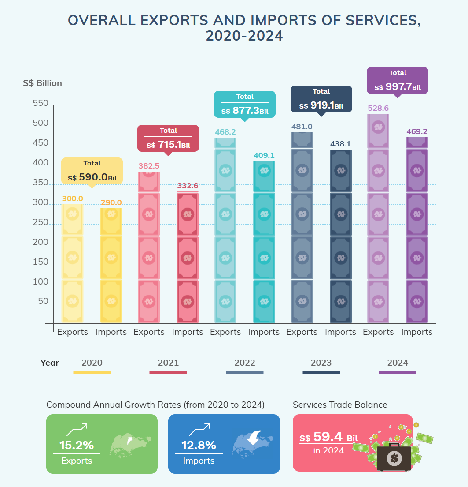
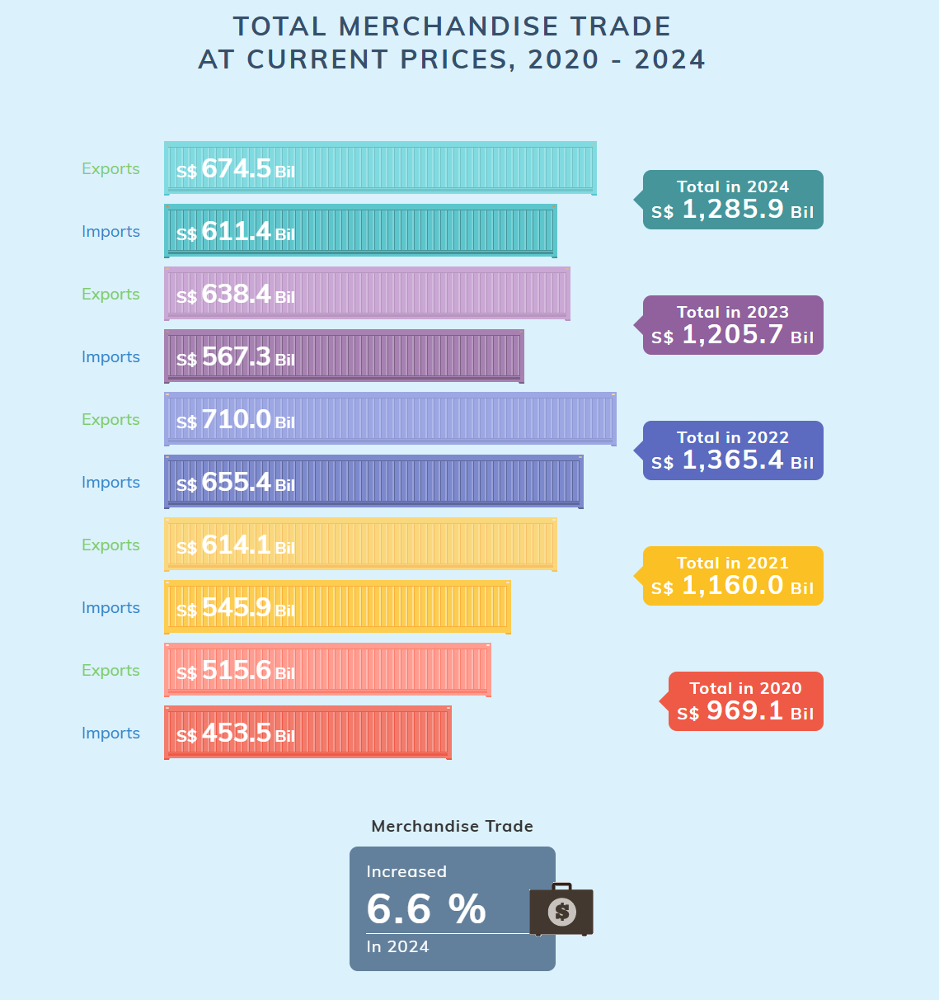
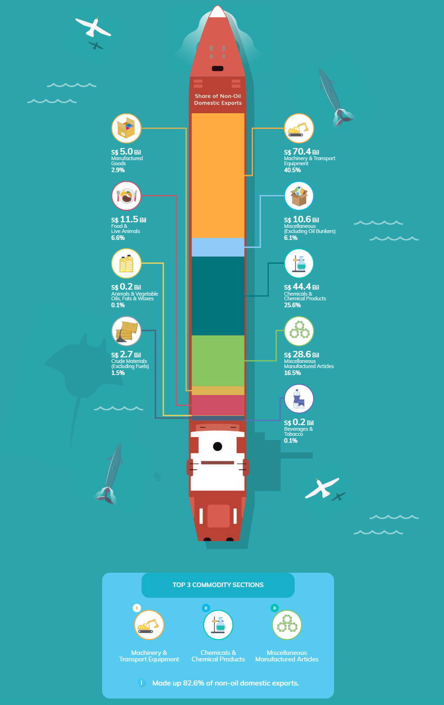

pacman::p_load(plotly, ggthemes, ggridges,
patchwork, ggplot2, tidyverse, dplyr, lubridate, ggdist) Take-Home Exercise 2.0: Be Tradewise or Otherwise
1.0 Introduction
1.1 The Task
2.0 Data Preparation
2.1 Loading the Required Libraries
3.0 Data Visualisation Make-over
This assignment involves selecting three data visualisations from this page. Each visualisation will be critique and redesigned. The assessment will be based on the framework from DataRemixed.com, which evaluates visualisations along two primary dimensions: clarity and aesthetics.

3.1 Overall Exports and Imports of Services, 2020 - 2024

3.1.1 Critique - Quadrant III: Ugly & Confusing
✅ The y-axis starts at 0, which makes it easier to gauge and assess the data’s scale.
❌ Using dollar bill icons to represent data in the bar chart adds visual confusion as we do not know the specific value each icon represents.
❌ Alternating exports and imports makes it difficult to visually track the growth trends of each category independently, thus disrupting the understanding of CAGR for exports and imports as there is no continuous visual path that readers can follow easily.
❌ The CAGR figures are positioned away from the main chart and are represented in a separate element at the bottom. The spatial separation may cause viewers to overlook these figures or fail to connect them with the corresponding data in the chart.
❌ The visualisation contains too much information such as yearly totals, individual exports and imports and trade balance. This might overwhelm the viewer, especially when trying to extract specific insights quickly.
❌ The visualisation lacks a lead-in paragraph that could set the context, making it difficult to immediately understand the message or the intent of the graph (e.g. whether exports are growing at a faster rate than imports or whether the service trade balance is increasing).
3.1.2 Proposed Make-over
Assuming that the intent of the visualisation was to highlight the CAGR of exports and imports, we will simplify the visualisation via:
3.1.3 Revised Data Visualisation
3.2 Total Merchandise Trade At Current Prices, 2020 - 2024

3.2.1 Critique - Quadrant IV: Confusing yet Beautiful
✅ Elements are well-aligned and spaced effectively.
✅ Bars are represented as a single container, instead of disjointed units like the dollar bills in Section 3.1, making it easier to interpret values.
❌ The visualisation aims to present the total merchandise trade, yet it splits the data into separate bars for exports and imports. This division makes it misleading as readers may focus on the differences between exports and imports rather than on the aggregate trade figures. It also makes it harder to quickly assess the overall trade performance year-on-year.
❌ Tick marks were omitted from the y-axis despite the value of merchandise trade being a continuous variable. This makes it difficult to interpret the scale of the data and estimate values.
❌ The years are not labeled directly on the y-axis or associated clearly with the corresponding data bars (which are in various hues of colour, adding more visual confusion). Instead, they are indicated in separate text boxes that state the total merchandise trade for each year. The disjointed presentation can confuse readers as it requires them to match the data visually across different parts of the chart.
❌ The % increase in merchandise trade in 2024 is placed separately at the bottom of the chart, detached from the visual data representation. Furthermore, the total trade values for each year are in separate text boxes and does not visually represent the percentage growth. Readers would not be able to intuitively interpret the growth rate without doing mental calculations.
3.2.2 Proposed Make-over
3.2.3 Revised Data Visualisation
3.3 Non-Oil Domestic Exports By Major Commodity Sections, 2024

3.3.1 Critique - Quadrant III: Ugly and Confusing
❌ The visualisation uses a stacked bar chart to represent data that does not seem to focus primarily on proportionate contributions of each category. The small font size used for percentages alongside the large emphasis on dollar values suggests that the actual values are more important than their relative proportions.
❌ The segments within the stacked bar chart are not arranged in descending order of value, making it challenging to quickly assess which sectors are more significant based on size.
❌ The visualisation highlights the top three commodities based on the text box at the bottom. However, presenting the data via a stacked bar chart makes it difficult for viewers to relate the text to specific segments of the chart.
3.3.2
6.0 References
Kam, T. S. (2023). R for Visual Analytics. Retrieved from https://r4va.netlify.app
https://dataremixed.com/2012/05/clarity-or-aesthetics-part-2-a-tale-of-four-quadrants/